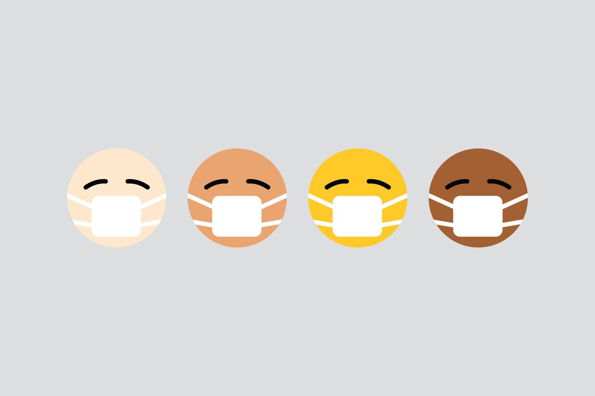
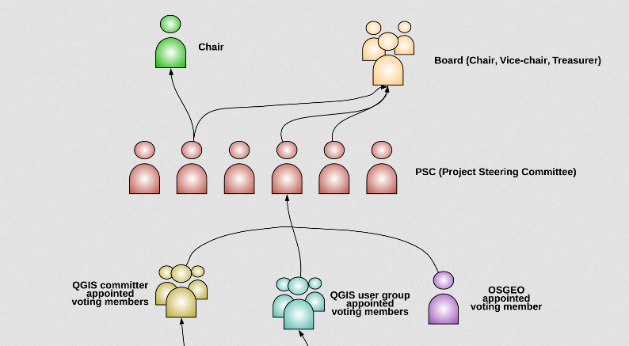
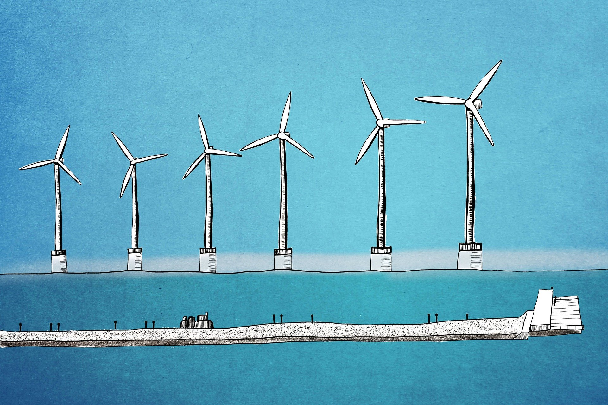
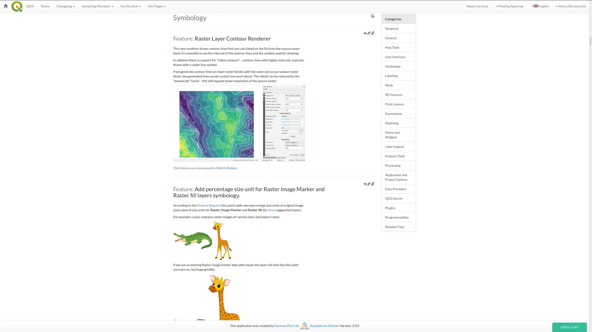
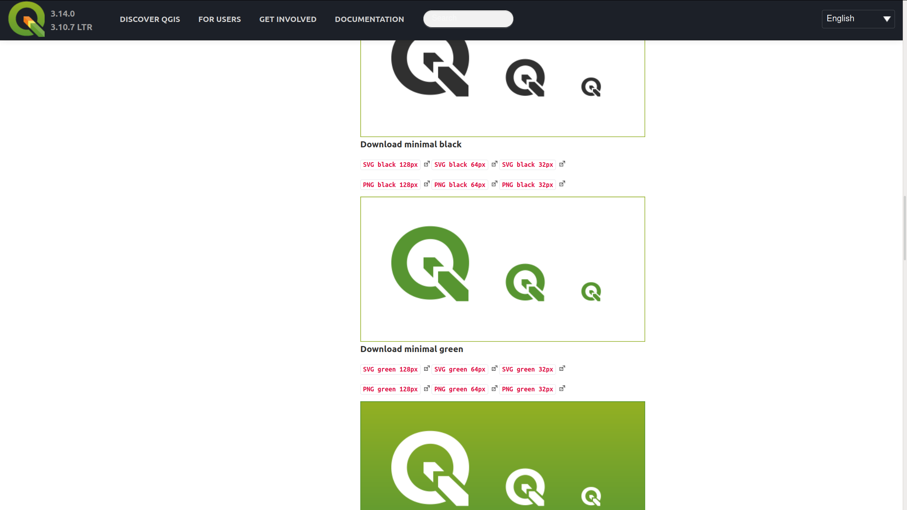
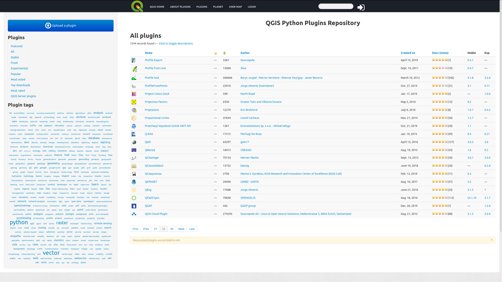

QGIS.org news and available resources
https://talks.opengis.ch/qgis.org/
Marco Bernasocchi
QGIS.org Chair
OPENGIS.ch CEO
@mbernasocchi
We are a
dynamic
group of
developers
and
consultants
expert in Open Source geo technologies
Community News
All hackfest cancelled
https://blog.qgis.org/2020/03/30/qgis-events-cancellation/

New Chair & vice, great "old" treasurer :)
https://blog.qgis.org/2020/05/13/greetings-from-your-new-qgis-project-chair/
It's OUT!
https://blog.qgis.org/2020/06/13/qgis-pi-mapping-contest-results/
OGC WMS 1.3 reference implementation
OGC Api for Features (AKA WFS3) --> certifcation ongoing
https://blog.qgis.org/2020/05/13/qgis-server-and-ogc-api-features/
New Environmental Policy
https://qgis.org/en/site/getinvolved/governance/codeofconduct/environmentalpolicy.html
Code of conduct
https://qgis.org/en/site/getinvolved/governance/codeofconduct/codeofconduct.html
Diversity statement
https://qgis.org/en/site/getinvolved/governance/codeofconduct/diversitystatement.html
Help yourself
Usergroups
https://qgis.org/en/site/forusers/usergroups.html
Documentation
https://qgis.org/en/docs
Stackexchange
https://gis.stackexchange.com/questions/tagged/qgis

Visual changelogs
https://qgis.org/en/site/forusers/visualchangelogs.html

Visual style guide
https://qgis.org/en/site/getinvolved/styleguide.html
Plugins
https://plugins.qgis.org/
News aggregator
https://planet.qgis.org/planet/
Help QGIS.org
How can you get involved?
https://qgis.org/en/site/getinvolved/
Help documenting
https://qgis.org/en/site/getinvolved/document.html
Help translating
https://qgis.org/en/site/getinvolved/translate.html
Answer on Stackexchange
https://gis.stackexchange.com/questions/tagged/qgis
Comment on QGIS Enhancement Proposals (QEP)
https://github.com/qgis/QGIS-Enhancement-Proposals/
Report issues
https://github.com/qgis/QGIS/issues
Sponsor features (& tests!)
and bug fixing -->
Buy commercial support
https://qgis.org/en/site/forusers/commercial_support.html
Take courses with certified organisations
https://qgis.org/en/site/getinvolved/certification.html
Become a sustaining member
https://qgis.org/en/site/getinvolved/governance/sustaining_members/sustaining_members.html
Thanks!
@mbernasocchi
marco@qgis.org
https://talks.opengis.ch/qgis.org/


 OGC WMS 1.3 reference implementation
OGC WMS 1.3 reference implementation Sponsor features (& tests!)
Sponsor features (& tests!) Become a sustaining member
Become a sustaining member 
 It's OUT!
It's OUT! Usergroups
Usergroups  Documentation
Documentation 
 News aggregator
News aggregator How can you get involved?
How can you get involved?  Help documenting
Help documenting  Comment on QGIS Enhancement Proposals (QEP)
Comment on QGIS Enhancement Proposals (QEP) Report issues
Report issues  Take courses with certified organisations
Take courses with certified organisations  Thanks!
Thanks!